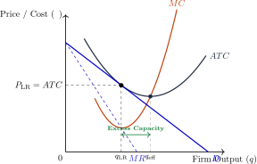
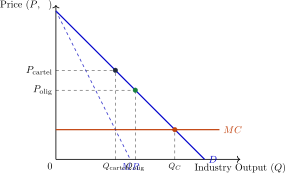
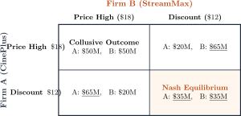

9 Chapter 9: Monopolistic Competition, Oligopoly, and Game Theory
This chapter provides a rigorous, pedagogical treatment of Chapter 9: Monopolistic Competition, Oligopoly, and Game Theory, benchmarked to standard principles curriculum.
9.1 Monopolistic Competition and Excess Capacity
1. Conceptual Introduction
Most everyday consumer markets—coffee shops, hair salons, casual restaurants, fitness studios, and clothing boutiques—do not fit neatly into either perfect competition or pure monopoly. Instead, they operate under monopolistic competition, a hybrid market structure combining three defining traits: (1) many competing sellers, (2) differentiated products (each seller offers a distinct flavor, location, brand aesthetic, or customer experience), and (3) free entry and exit in the long run.
Because its product is distinct from rivals, each monopolistically competitive firm enjoys a small degree of brand loyalty and faces a downward-sloping demand curve. Just like a monopolist, the firm maximizes short-run profit by producing where Marginal Revenue equals Marginal Cost (\(MR = MC\)) and pricing on its demand curve (\(P > MC\)). However, because there are zero barriers to entry, positive short-run economic profits attract new competitors into the neighborhood—stealing customers and shifting each incumbent firm’s demand curve inward until economic profits are driven to zero.
In long-run equilibrium, the firm’s downward-sloping demand curve becomes tangent to its Average Total Cost (\(ATC\)) curve, enforcing zero economic profit (\(P = ATC\)). Yet unlike perfect competition, this tangency occurs strictly to the left of minimum \(ATC\), creating two permanent structural features: a markup over marginal cost (\(P > MC\)) and excess capacity (\(q_{\text{LR}} < q_{\text{efficient scale}}\)), which represents the cost society pays for product variety.
2. Visual Representation
Figure 1 illustrates the long-run zero-profit equilibrium of a monopolistically competitive firm, highlighting the tangency between demand and \(ATC\) and the resulting excess capacity gap.

3. Real-World Application: Neighborhood Coffee Shops and Retail Differentiation
Walk down any busy commercial avenue and you will see independent cafés every two blocks—one roasting single-origin pour-overs, another offering oat-milk matcha and study booths, and a third specializing in quick drive-thru espresso. None earns monopoly-level economic profits for long because new cafés open whenever neighborhood rents permit, yet each operates below its physical kitchen capacity during mid-afternoon lulls so consumers can enjoy variety and convenience.
4. Mathematical Foundation (Algebra Level)
In long-run monopolistic competition, two simultaneous conditions hold at output \(q_{\text{LR}}\):
\[ MR(q_{\text{LR}}) = MC(q_{\text{LR}}) \quad \text{(Profit Maximization)}, \qquad P(q_{\text{LR}}) = ATC(q_{\text{LR}}) \quad \text{(Zero Economic Profit)} \]
Worked Problem: A boutique fitness studio in a monopolistically competitive neighborhood faces a long-run inverse demand curve \(P = 50 - 2q\) (where \(P\) is class price in dollars and \(q\) is daily clients) and corresponding Marginal Revenue \(MR = 50 - 4q\). Its Marginal Cost is constant at \(MC = \$10\) per client, and its Average Total Cost is \(ATC = \frac{200}{q} + 10\).
- Find the studio’s profit-maximizing client volume \(q_{\text{LR}}\) and class price \(P_{\text{LR}}\).
- Verify that the studio earns zero economic profit in the long run.
- Calculate the firm’s markup over marginal cost (\(P_{\text{LR}} - MC\)).
Step-by-Step Breakdown:
- Set \(MR = MC\) to Solve for \(q_{\text{LR}}\) and \(P_{\text{LR}}\):
\[ 50 - 4q_{\text{LR}} = 10 \implies 4q_{\text{LR}} = 40 \implies q_{\text{LR}} = \mathbf{10\text{ clients per day}} \]
Substitute \(q_{\text{LR}} = 10\) into the inverse demand curve:
\[ P_{\text{LR}} = 50 - 2(10) = \mathbf{\$30\text{ per class}} \]
- Check Long-Run Economic Profit (\(\pi\)): Compute \(ATC\) at \(q_{\text{LR}} = 10\):
\[ ATC(10) = \frac{200}{10} + 10 = 20 + 10 = \$30\text{ per class} \]
Since \(P_{\text{LR}}\ (\$30) = ATC\ (\$30)\), economic profit is:
\[ \pi = (\$30 - \$30) \times 10 = \mathbf{\$0} \]
- Compute the Markup over Marginal Cost:
\[ \text{Markup} = P_{\text{LR}} - MC = \$30 - \$10 = \mathbf{\$20\text{ per class}} \]
Conclusion: The studio breaks even in economic terms (\(\pi = \$0\)) while maintaining a \(\$20\) markup above marginal cost due to product differentiation.
9.2 Oligopoly, Cartels, and Strategic Interdependence
1. Conceptual Introduction
When an industry is dominated by just a handful of large firms—such as commercial aircraft manufacturing (Boeing and Airbus), wireless telecom carriers, or major airlines—the market is an oligopoly. Unlike price-taking farmers or small cafés, oligopolists are acutely aware of one another: every pricing decision, advertising campaign, or product launch by one firm directly affects its rivals’ sales and triggers counter-moves. Economists call this mutual awareness strategic interdependence.
Because oligopolists control the bulk of market supply, they face a powerful temptation to collude—forming a formal or informal cartel to restrict industry output and hold prices up near the monopoly level so they can split monopoly profits. However, cartels suffer from an inherent internal instability. Once a cartel sets a high price above marginal cost (\(P > MC\)), each individual member realizes it can secretly undercut the agreed price slightly, steal its rivals’ customers, and boost its own profit—until all members cheat and prices collapse back toward competitive levels.
Economists measure industry concentration using two standard tools: the Four-Firm Concentration Ratio (\(CR_4\)), which sums the market shares of the four largest firms, and the Herfindahl-Hirschman Index (\(HHI\)), which sums the squared market shares of all firms in the market (\(HHI = \sum_{i=1}^N s_i^2\)). Antitrust regulators at the Department of Justice and FTC scrutinize mergers that sharply increase the \(HHI\).
2. Visual Representation
Figure 2 contrasts market outcomes along a quantity-price continuum, showing how an oligopoly settles strictly between the collusive monopoly benchmark (\(Q_M, P_M\)) and the competitive benchmark (\(Q_C, P_C\)).

3. Real-World Application: OPEC Production Quotas and Cheating Incentives
The Organization of the Petroleum Exporting Countries (OPEC) acts as an international oil cartel, agreeing on production quotas to keep global crude oil prices elevated. Whenever OPEC successfully restricts output and pushes oil prices to \(\$90\) per barrel, individual member countries face an immediate temptation to quietly pump above their assigned quota—selling extra barrels at \(\$90\) while extraction costs are only \(\$20\)—frequently triggering price wars and quota breakdowns.
4. Mathematical Foundation (Algebra Level)
The Herfindahl-Hirschman Index (\(HHI\)) squares each firm’s percentage market share \(s_i\) (from \(0\) to \(100\)):
\[ HHI = s_1^2 + s_2^2 + \dots + s_N^2 \]
Worked Problem: A regional wireless internet market is served by four providers with market shares of \(40\%\), \(30\%\), \(20\%\), and \(10\%\).
- Compute the Four-Firm Concentration Ratio (\(CR_4\)) and the baseline \(HHI\).
- Compute the new post-merger \(HHI\) if the two smallest providers (\(20\%\) and \(10\%\)) merge into a single \(30\%\) firm.
Step-by-Step Breakdown:
- Calculate Baseline \(CR_4\) and \(HHI\):
\[ CR_4 = 40\% + 30\% + 20\% + 10\% = \mathbf{100\%} \]
\[ HHI_{\text{pre}} = 40^2 + 30^2 + 20^2 + 10^2 = 1{,}600 + 900 + 400 + 100 = \mathbf{3{,}000} \]
- Calculate Post-Merger \(HHI\) (Shares: \(40\%\), \(30\%\), \(30\%\)):
\[ HHI_{\text{post}} = 40^2 + 30^2 + 30^2 = 1{,}600 + 900 + 900 = \mathbf{3{,}400} \]
Conclusion: The merger raises the \(HHI\) by \(400\) points (from \(3{,}000\) to \(3{,}400\)), flagging a highly concentrated oligopoly for regulatory review.
9.3 Game Theory, Dominant Strategies, and Nash Equilibrium
1. Conceptual Introduction
Because oligopolists cannot make decisions in a vacuum, economists analyze their behavior using game theory—the mathematical study of strategic decision-making when each player’s payoff depends on the actions of other players. Every strategic game consists of three building blocks: (1) the players, (2) the strategies available to each player, and (3) the payoffs resulting from every combination of choices.
To predict how rational rivals will behave without binding contracts, economists look for two key concepts:
- Dominant Strategy: A strategy that yields a strictly higher payoff for a player no matter what strategy the rival chooses. If a player has a dominant strategy, they will always play it.
- Nash Equilibrium: An outcome in which every player is choosing their best response given what the other players are doing. At a Nash equilibrium, no player can improve their own payoff by unilaterally changing their strategy.
The most famous game in economics is the Prisoner’s Dilemma. In this game, both firms could earn higher joint profits by cooperating (e.g., keeping prices high or limiting advertising), yet each firm’s individual dominant strategy is to defect (slash prices or flood the market with ads). As a result, rational self-interest locks both firms into a non-cooperative Nash equilibrium where both earn lower profits!
2. Visual Representation
Figure 3 presents a \(2 \times 2\) payoff matrix for two competing streaming platforms deciding between keeping subscription prices high (\(\$18\)) or discounting to capture subscribers (\(\$12\)).
In a business pricing game, failure to cooperate traps rival firms in a low-price Nash equilibrium—which hurts the firms’ combined profits, yet benefits consumers through lower prices and higher consumer surplus! Antitrust laws exist specifically to prevent oligopolists from escaping their Prisoner’s Dilemma through illegal price-fixing agreements.

3. Real-World Application: Airline Fare Wars and Repeated Interaction
When two airlines compete on the same nonstop route (such as San Francisco to Los Angeles), matching a competitor’s fare cut within hours via automated pricing software acts as a tit-for-tat enforcement mechanism. Because airlines interact repeatedly day after day rather than playing a one-shot game, the credible threat of immediate retaliation helps stabilize fares without explicit collusion.
4. Mathematical Foundation (Algebra Level)
To solve any \(2 \times 2\) simultaneous game for a Nash equilibrium, evaluate each player’s conditional best responses:
\[ \text{Strategy } s_A^* \text{ is a Best Response to } s_B^* \iff \pi_A(s_A^*, s_B^*) \ge \pi_A(s_A, s_B^*) \quad \forall s_A \]
Worked Problem: Using the payoff matrix in Figure 3, prove mathematically why Discount (\(\$12\)) is a strictly dominant strategy for Firm A and verify that (Discount, Discount) is the unique Nash equilibrium.
Step-by-Step Breakdown:
- Check Firm A’s Best Response When Firm B Plays “Price High (\(\$18\))”: Compare Firm A’s profit in the left column:
\[ \pi_A(\text{Discount} \mid \text{B High}) = \$65\text{M} > \pi_A(\text{High} \mid \text{B High}) = \$50\text{M} \]
Firm A earns \(\$15\text{M}\) more by discounting.
- Check Firm A’s Best Response When Firm B Plays “Discount (\(\$12\))”: Compare Firm A’s profit in the right column:
\[ \pi_A(\text{Discount} \mid \text{B Discount}) = \$35\text{M} > \pi_A(\text{High} \mid \text{B Discount}) = \$20\text{M} \]
Firm A again earns \(\$15\text{M}\) more by discounting.
- Confirm Dominant Strategy and Nash Equilibrium: Because Discount yields a higher payoff regardless of Firm B’s choice, Discount is Firm A’s strictly dominant strategy. By symmetry, Discount is also Firm B’s strictly dominant strategy. At (Discount, Discount), neither firm can raise its profit above \(\$35\text{M}\) by switching unilaterally to High (which drops its profit to \(\$20\text{M}\)).
Conclusion: (Discount, Discount) with payoffs \((\$35\text{M}, \$35\text{M})\) is the unique Nash equilibrium, even though both firms would earn \(\$50\text{M}\) each if they could credibly cooperate.
Note for Economics Majors and Quantitative Students: In a continuous quantity-setting Cournot duopoly facing inverse demand \(P = 100 - (q_1 + q_2)\) with constant marginal cost \(MC = 10\), Firm 1 maximizes \(\pi_1 = [100 - q_1 - q_2]q_1 - 10q_1\). Setting \(\frac{\partial \pi_1}{\partial q_1} = 90 - 2q_1 - q_2 = 0\) yields Firm 1’s continuous best-response function:
\[ q_1^*(q_2) = 45 - \frac{1}{2}q_2 \]
By symmetry, \(q_2^*(q_1) = 45 - \frac{1}{2}q_1\). Solving simultaneously gives the Cournot-Nash equilibrium output \(q_1^* = q_2^* = 30\) (total output \(Q = 60\), price \(P = \$40\)), lying strictly between the cartel output (\(Q_M = 45, P_M = \$55\)) and competitive output (\(Q_C = 90, P_C = \$10\)).